A reference build for AI-native engineering:
Spec-Driven Development · Context Engineering · Constitution-as-CI
Fatih Furkan Bilsel 12 May 2026 GitHub Copilot + SpecKit
/speckit.specify → plan → tasks → implement on every slice, same loop both phases.What follows: the AI-native workflow I used, then a screen tour mapped to the technical decisions behind each surface.
.github/copilot-instructions.md = project constitution loaded into every Copilot turnAGENTS.md conventions (server, db, ui)check:error-codes, check:ui-tokens) feed Copilot back its own mistakes/speckit.specify — user stories, acceptance criteria/speckit.plan — tech approach, data model, contracts/speckit.tasks — atomic, testable unitsResult: Copilot generates inside guardrails I designed — not the other way round.
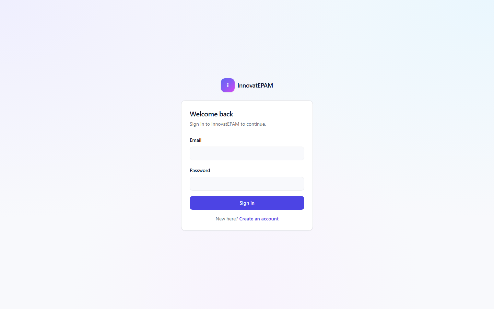
/login?callbackUrl=…BOOTSTRAP_ADMIN_EMAIL marker (audited)FR-027 sliding expiry audited login_success / login_failure
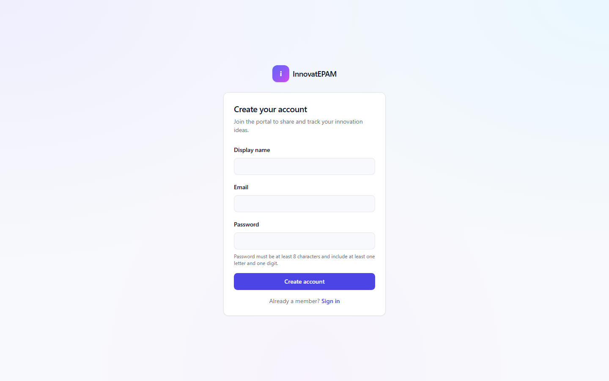
EMPLOYEEERROR_CODESregister security event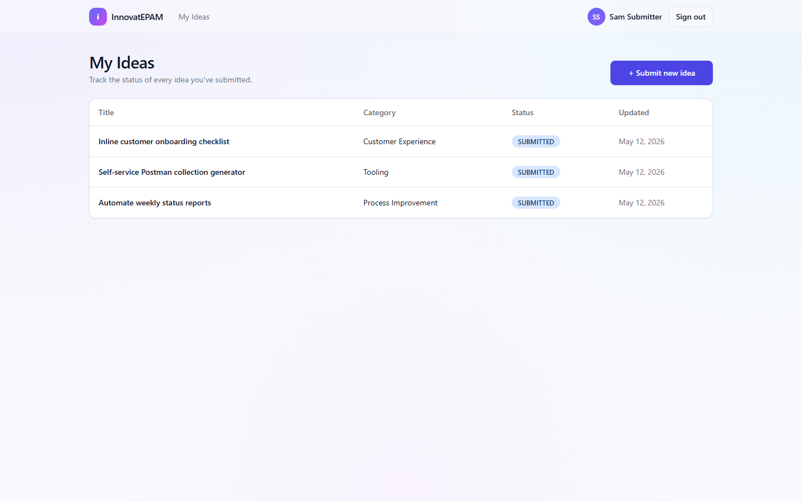
All ideas authored by the signed-in user, newest first, with status badges and category.
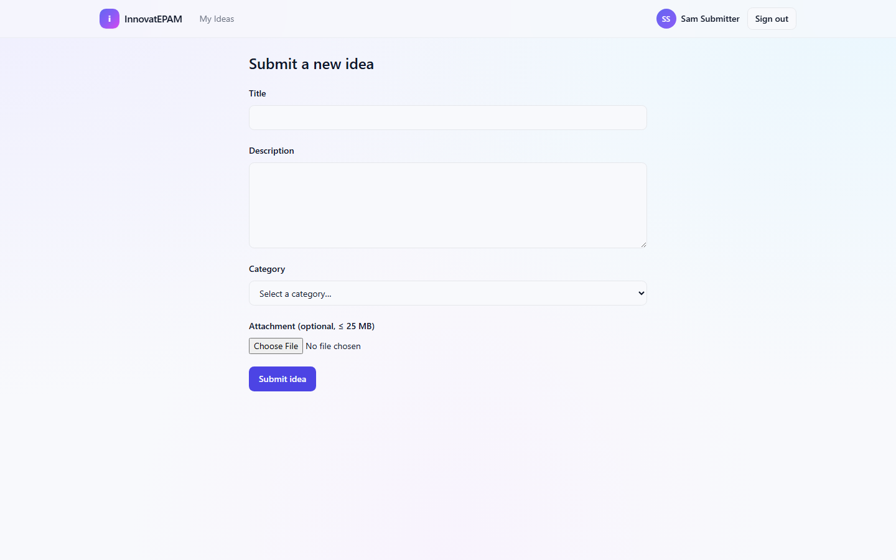
localStorage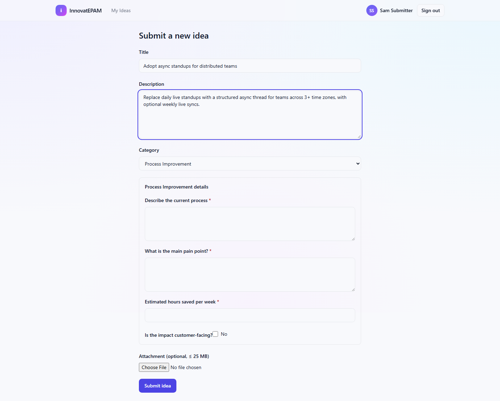
ADR-0009 schema storage ADR-0010 label snapshots ADR-0011 dynamic Zod
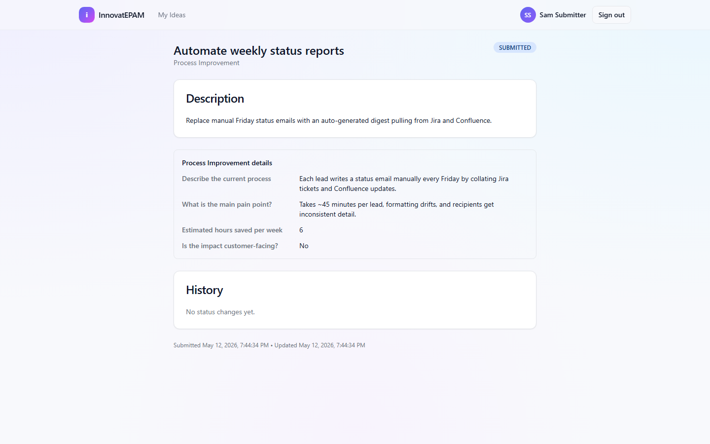
Reads like a one-pager: status, description, attachment download, and the structured answers grouped under the category — rendered from the snapshot, not the live schema.
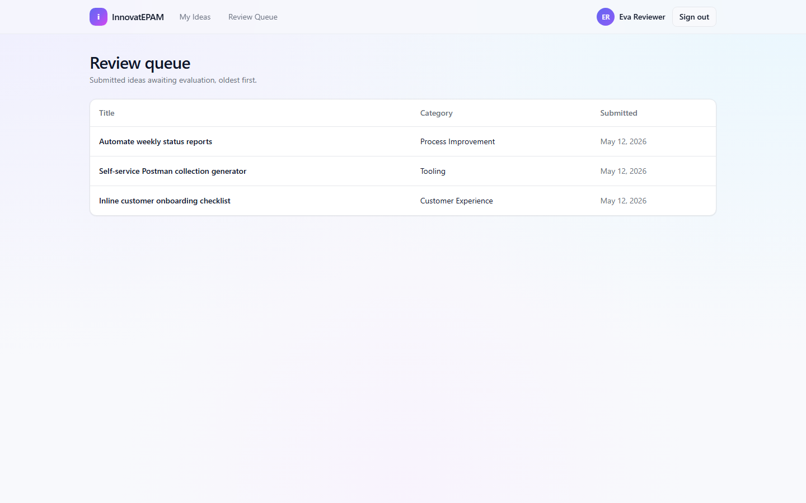
SUBMITTED ideas, oldest firstEVALUATOR + ADMIN only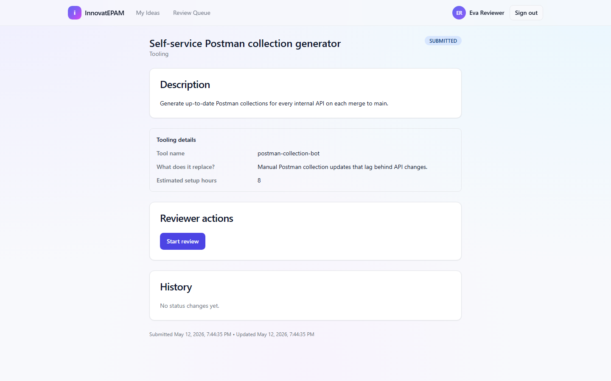
Start review, Approve, Reject — comment required on approve/reject. Buttons are gated by the same pure-function state machine that the API enforces in the DB transaction.
REJECTED branches off from SUBMITTED or UNDER_REVIEW.
| Action | From | To | Roles | Comment? |
|---|---|---|---|---|
START_REVIEW | SUBMITTED | UNDER_REVIEW | EVALUATOR, ADMIN | — |
APPROVE | SUBMITTED, UNDER_REVIEW | APPROVED | EVALUATOR, ADMIN | required |
REJECT | SUBMITTED, UNDER_REVIEW | REJECTED | EVALUATOR, ADMIN | required |
IMPLEMENT | APPROVED | IMPLEMENTED | ADMIN | — |
Pure function. Same evaluator runs in the API transaction and in the UI for button gating. Every transition appended to the status_transitions audit table.
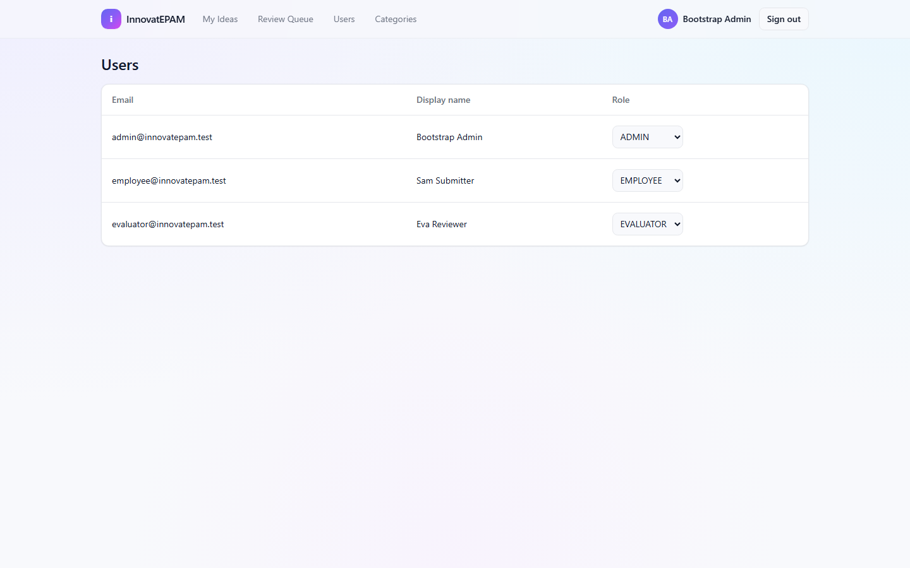
Promote / demote between EMPLOYEE / EVALUATOR / ADMIN. Self-demotion is blocked. Every role change is audited.
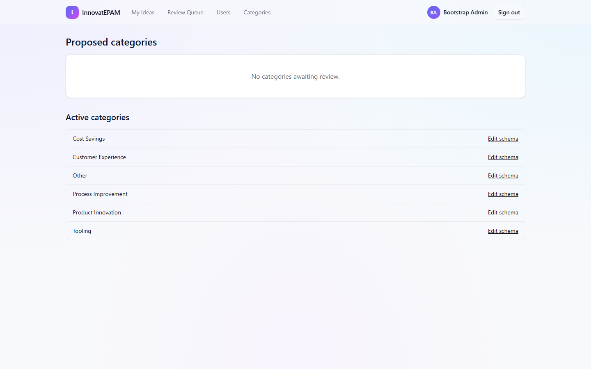
PROPOSED queue (employee-suggested) → admin approves to ACTIVE or rejects. Rejected categories' ideas re-link to the protected Other.
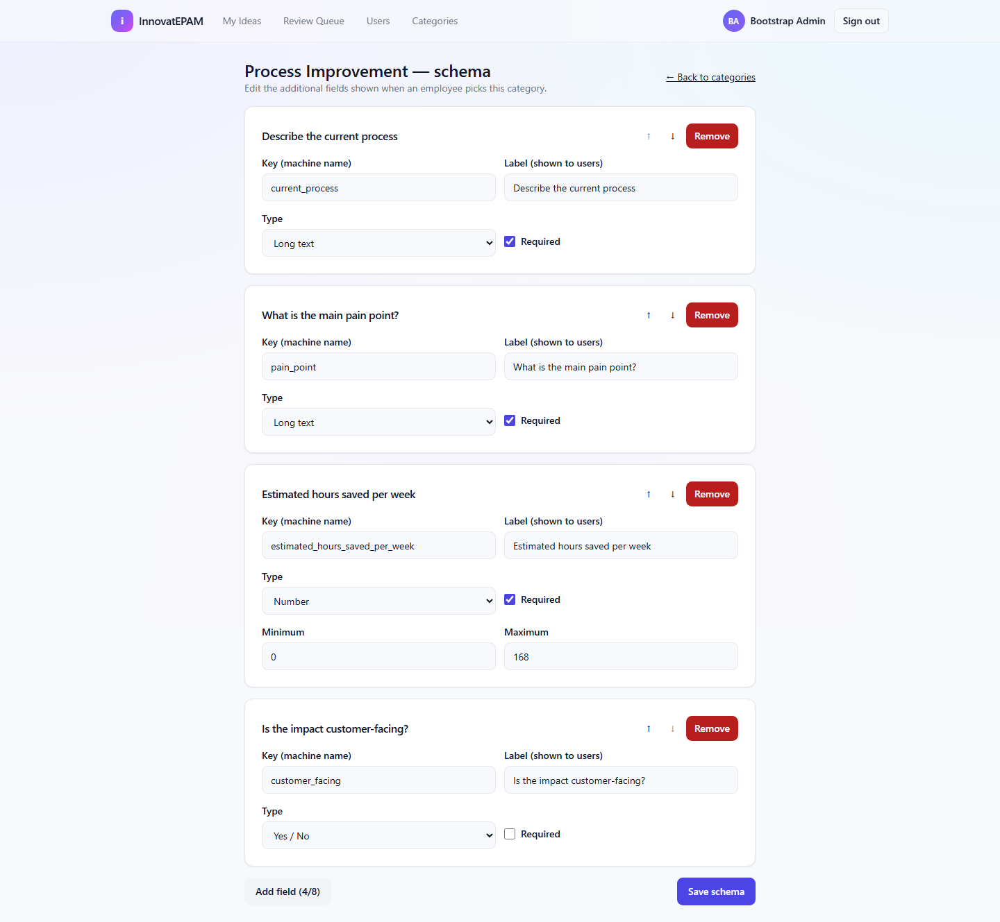
Add / remove / reorder fields. Saved schema becomes the live source of truth for new submissions; existing answers keep their snapshot labels, so renames never lose review-time meaning.
check:error-codes, check:ui-tokens
12 ADRs documented (specs/001-…/adr/ + specs/002-…/adr/) — every non-trivial choice is justified and dated.
Constitution gate: ≥70% coverage on src/server/** + src/lib/** — met. CI also enforces every ERROR_CODES entry to be exercised by ≥1 test, no raw hex/rgb literals in UI, and clean Prettier / ESLint / tsc --noEmit.
auth() + redirect(); no client trust.src/server/idea-state-machine.ts — same evaluator in API transaction and in UI button gating.data/; works fully offline.spec.md — user stories & acceptance criteriaplan.md — tech approachresearch.md — options weigheddata-model.md — tables & constraintscontracts/openapi.yaml — API shapetasks.md — granular implementation listadr/ — irreversible decisions, datedERROR_CODE exercised by ≥1 testnoUncheckedIndexedAccess, exactOptionalPropertyTypesdata-model.mdThe interesting work isn’t the code Copilot wrote — it’s the constraints I designed so that what it wrote was safe to merge.
Questions?
Fatih Furkan Bilsel · 12 May 2026
EPAM A201 — Beyond Vibe Coding
Takeaway: AI tools amplify whatever discipline you bring to them.
Spec, ADRs, types and CI are how I made that amplification safe.